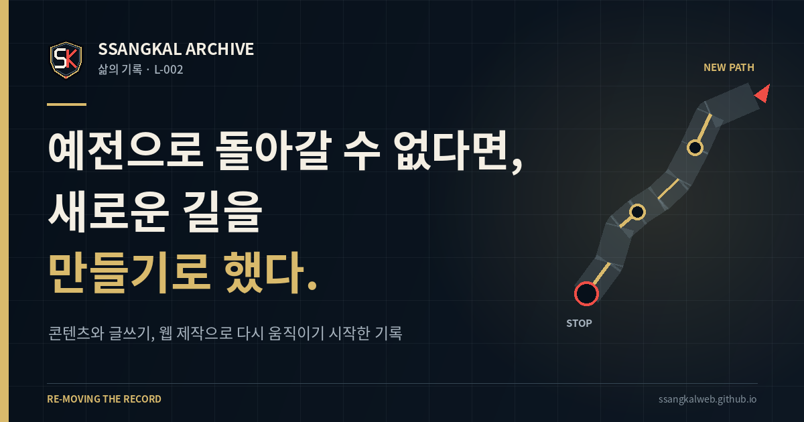
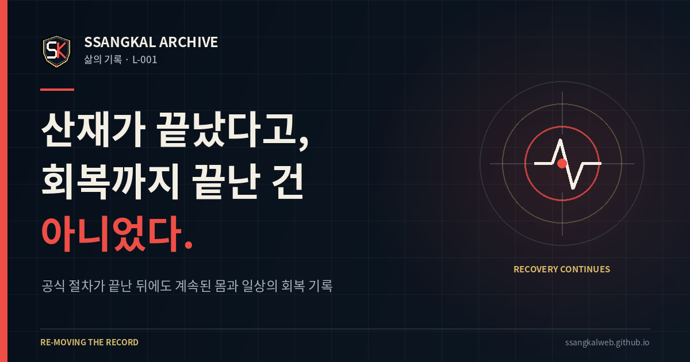

L-004NEW
산재 · 장해심사 · 방문 준비
장해심사 지사 방문을 앞두고,
가지 말까부터 생각했다
평가받는 자리가 두려워 참석을 망설였지만, 내 상태를 과장하거나 축소하지 않고 정확히 전달하기 위한 준비부터 시작했습니다.
LIFE RECORD · RECOVERY
ARCHIVE / LIFE
사고 이후의 치료와 재활,
산재 확인 과정과 달라진 일상,
그리고 다시 삶을 세우는 과정을 기록합니다.
PUBLISHED RECORDS
산재 · 장해심사 · 방문 준비
평가받는 자리가 두려워 참석을 망설였지만, 내 상태를 과장하거나 축소하지 않고 정확히 전달하기 위한 준비부터 시작했습니다.

산재 · 기다림 · 일상
불확실한 판단을 기다리는 동안에도 몸을 기록하고, 오늘 할 수 있는 일을 나누며 삶의 리듬을 지켜낸 시간을 기록합니다.

회복 · 전환 · 다시 만드는 삶
과거와 똑같아지는 날만 기다리는 대신, 지금의 조건으로 지속할 수 있는 콘텐츠와 글쓰기, 웹 제작의 길을 만들기 시작했습니다.

산재 · 회복 · 다시 시작
서류 위의 종결과 몸의 회복은 같은 날 오지 않았습니다. 치료 이후에도 남은 일상의 어려움과 새로운 길을 준비하게 된 과정을 기록합니다.